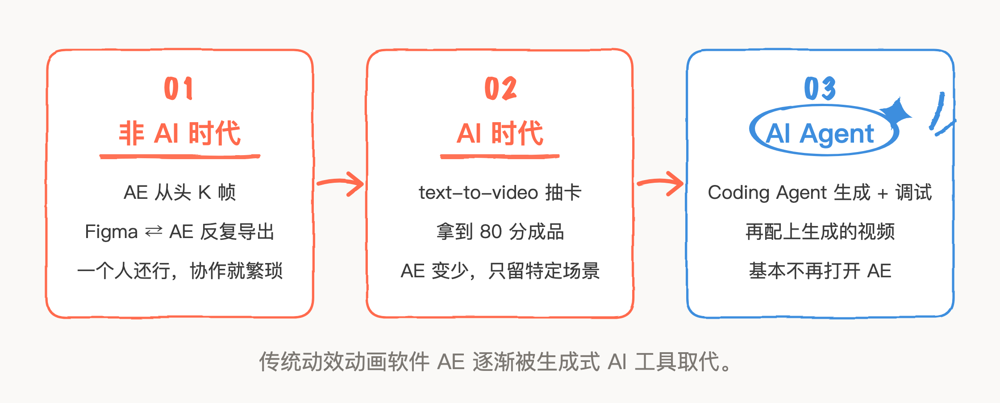
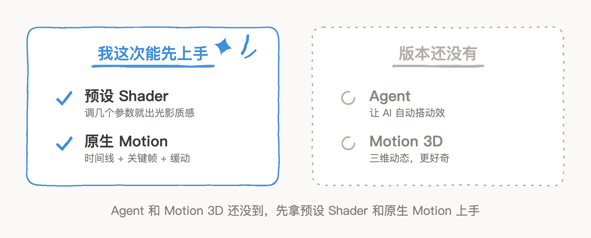
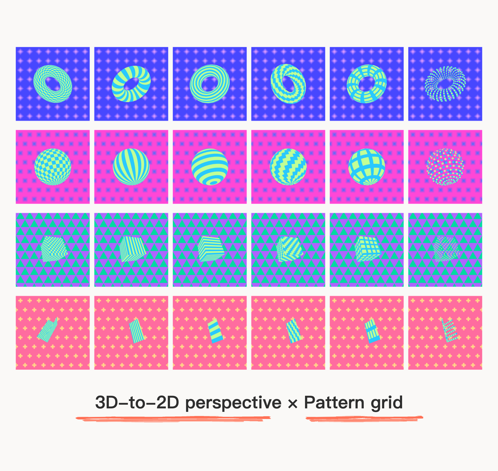
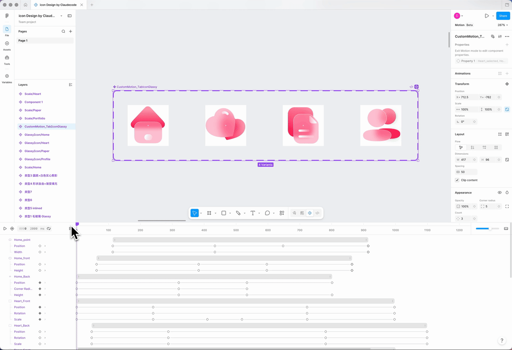
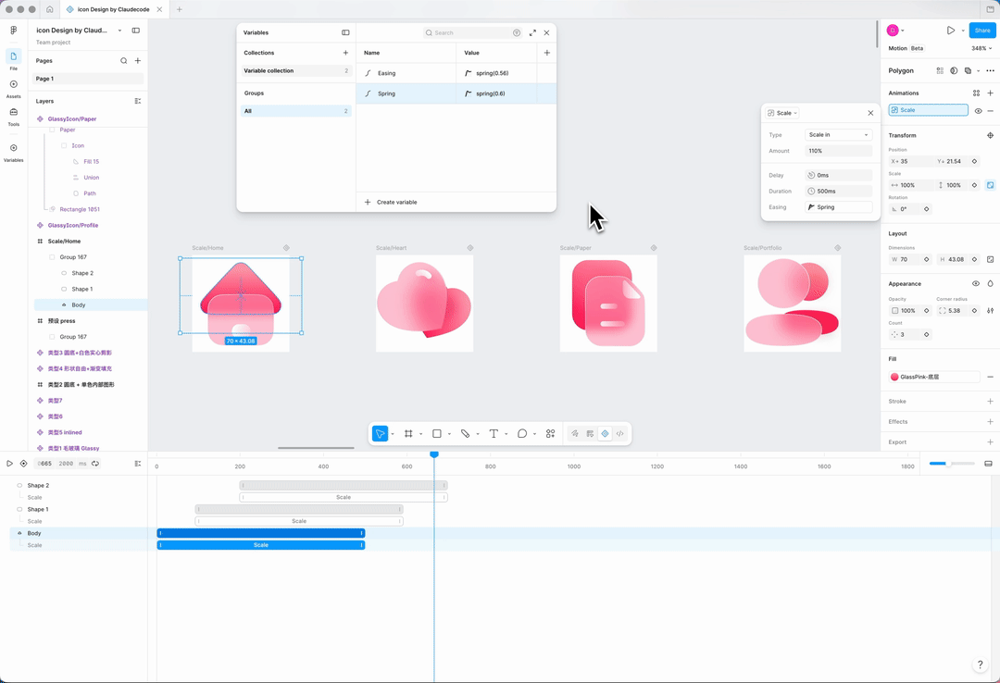
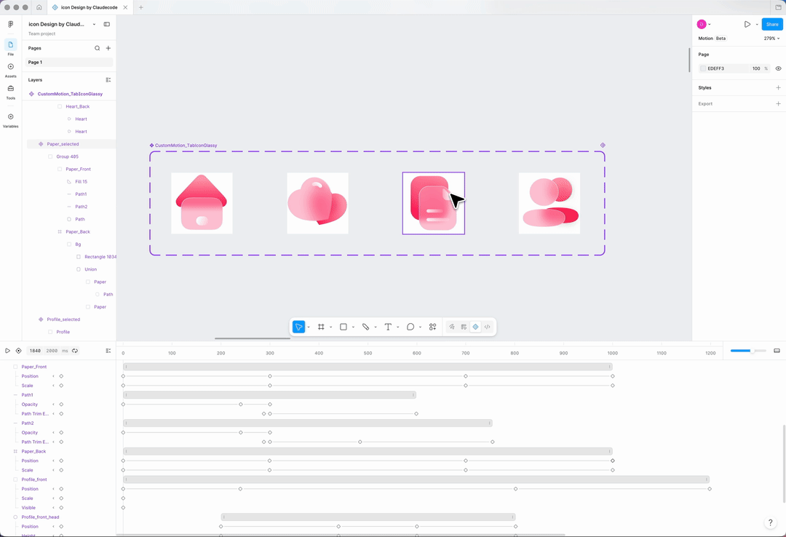
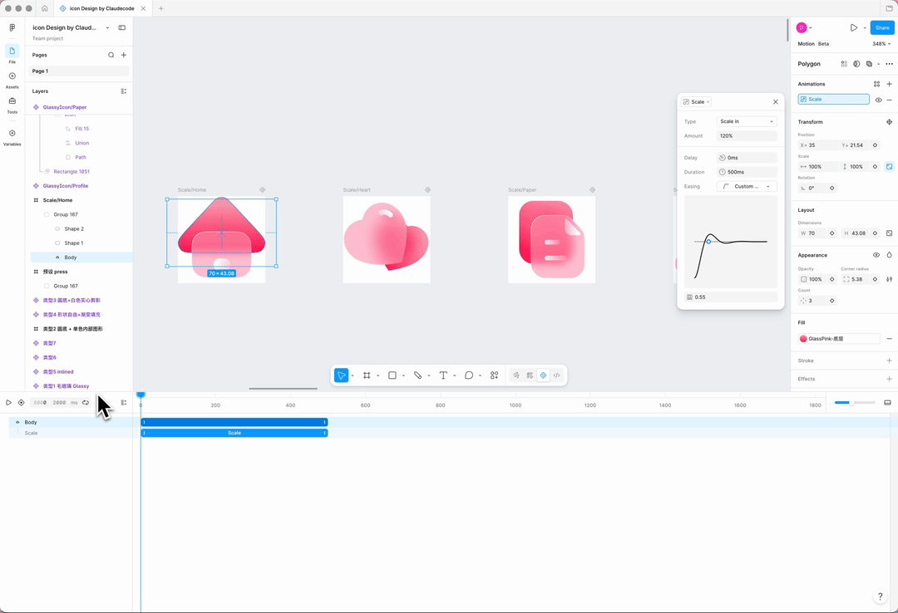

非 AI 时代，我做动效首选 AE 从头开始 K 帧，一直觉得麻烦的是：这边Figma的素材做完还得导到AE里、Figma里改动又得重新导出一遍，自己一个人倒腾倒也还行，要是要和他人协作就很繁琐、耗时又费力；后面 AI 时代来了，视频生成技术成熟了，就用提示词抽卡生成，可以获得80分成品，这时 AE 就很少用了；再后来就用 Coding Agent 生成和调试，结合生成的视频，基本可以满足大部分动态内容的设计和输出，就没有打开过 AE。

而这次 Figma config2026 推出了 Figma Motion，主打原生、轻量，不离开 Figma 就做动态，对于 Figma 设计工作流就非常有吸引力；不过我的版本还没有 Agent 和 Motion 3D，虽然更好奇这俩功能，但也先试试预设 Shader 与原生 Motion 这两工具，自己上手用参数一个个调过后，也能摸出来一点手感。

Shader 预设 Tools
组合更出质感
拿 Figma 官方两个预设 Tools——3D-to-2D perspective 做中心的立体图形、Pattern grid 铺背景，把形状、图案、底纹换着组合：

更好玩的是
把 Shader 和 Motion 一起用
•Motion 能直接给 shader 的参数打关键帧。
•Pattern grid有些参数能加关键帧，那就说明可以做 Motion，主要是形状、布局、缩放，做出来偏波普风格：

想做几何、光影、彩色条纹能一起呼吸的效果，但3D-to-2D perspective 却不能K帧。
预设 Tools 还有 Mesh gradient ，可以用来做弥散流体背景打底，Pixelate 叠像素颗粒可以用来模拟像素风：

•Mesh gradient 是固定16个可编辑颜色点的平滑网格渐变，要是能调整颜色点的数量，就更方便了；这就是预设效果的局限，后面有了 Agent 再创建自己趁手的。
Figma Motion 比 AE 轻
逻辑很好理解
Shader 之外，我拿自己以前做过的一套 Glassy 3D 图标单独试了 Motion。上手第一感受：比 AE 轻很多，且操作逻辑很自然。 时间线、关键帧、缓动曲线，这些多很熟悉。

这套做了每个 icon 不同的点击动效，做得很快，但我觉得不够极致规范。
所以我试图找到可以更规范的做法：Variables
算是把该有的功能都实操了一番，相较于 AE ，Motion 有两个亮点：
•一是可以直接选预设动效。 我给图标的每个元素加的是 Scale in 缩放预设，一套参数设置好了可以完全复用到其他图层，就和视觉参数一样的逻辑，省掉从零 K 帧。

时间轴可以快速定位到运动曲线，能更快地手动调整。

•二是自定义的动效能做成组件，复用到整套图标上。 我把调好的一段 Scale 动效，配合 Variants，一次就套到了首页、心、文档、头像这一整组图标上，每个图标重新做一遍。

这在 AE 里是做不到的——AE 的动效是绑在具体图层上的一次性产物，Figma 这套是把它当成设计系统里可复用的一个元素。对天天要维护一整套图标的人来说，这个复用逻辑省的不是一点半点。
至于交付，Figma 官方也接上了：选任意动画帧能直接导出 MP4、GIF、SVG、WEBM；切到 Dev Mode，整条时序轴可检视，每个时间值、缓动曲线、关键帧都可读，开发者直接复制成 CSS、JSON、React 或 motion.dev；还兼容 MCP，把动画帧链接丢给 coding agent，带着完整动效上下文过去，不会被重新解释。这块我没深挖，点到为止。
这两套玩下来，Shader 和 Motion 都不难用，官方预设把入门门槛压得很低，而且细节满满。
不过，调那几个参数、编排动效，还是偏手搓了，有了 Agent 就更加 AI native 了。就目前对我来说，能不切 AE、不部署环境、在一块画布上就把材质和动效都做完，还能复用，这就够我把它放进日常了。
本文动效交付相关说明参考 Figma 官方博客 Config 2026；其余 Shader / Motion 成果均为本人在 Figma 中实操。